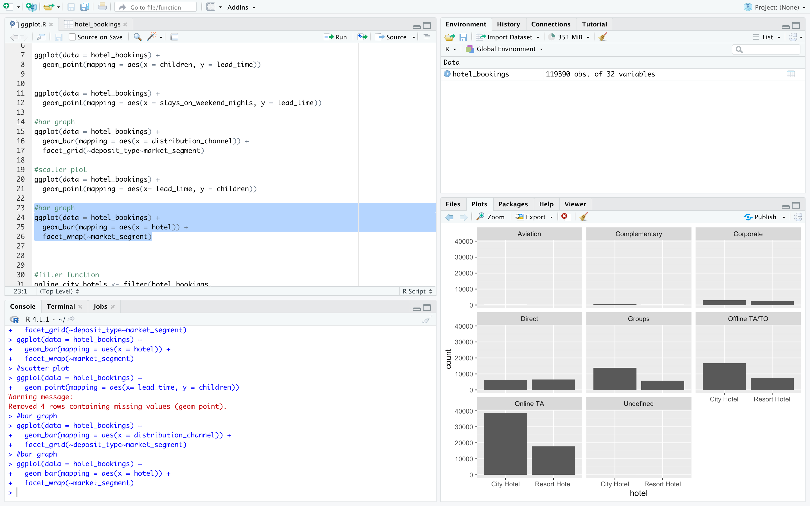

Heroes examples
HERE IS SOME OF MY WORK
Visualizations With R
This is an analysis I did on a hotel bookings dataset and the main skill I used in this was visualizations with graphs and charts. As you can see, I used the ggplot functions with the R program to visualize an idea about the data. The result was proven with a whole stack of charts showing the 2 different hotels and their compatibility with each market segment.
Analysis with R
Here is an analysis I did with R where I tested out new packages and tried using them to conduct an analysis of the data and create a graph to try to prove some points. The analysis turned out pretty well, and I got a good idea of the types of data. I was able to create and divide a dot/line graph that easily shows the 4 classes and their values as they increase. This also shows my use of R visualizations and how it is much easier to create graphs and charts to show what I wanted to convey.
Analysis with spreadsheets and pivot tables
Quickly design and customize responsive mobile-first sites with Bootstrap, the world’s most popular front-end open source toolkit, featuring Sass variables and mixins, responsive grid system, extensive prebuilt components, and powerful JavaScript plugins.
Analysis with SQL Queries
Quickly design and customize responsive mobile-first sites with Bootstrap, the world’s most popular front-end open source toolkit, featuring Sass variables and mixins, responsive grid system, extensive prebuilt components, and powerful JavaScript plugins.
Case Study With R
Quickly design and customize responsive mobile-first sites with Bootstrap, the world’s most popular front-end open source toolkit, featuring Sass variables and mixins, responsive grid system, extensive prebuilt components, and powerful JavaScript plugins.